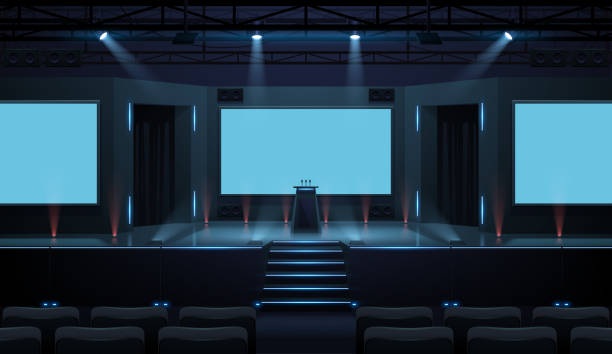

Välkommen till konferans bättre webb
20-22 Oct 2023
GÖTEBORG

Är du intresserad av att utveckla dina kunskaper om frontend utveckling? Då är det här konferansen det bästa tillfället för dig som brinner som den här branschen, där varje år hålls konferansen "bättre webb" i 3 dagar per år i Göteborg, som givetvis ska leda till framgång inom frontend utveckling. Som designer är det bästa som finns att få veta hur andra gör. Vilka verktyg eller trix kan du inte sluta prata om?. Dessutom lär man sig mer av varandra förstås genom att hjälpa varandra med mån om att förbättra kvaliteten på webbsidor, vilket gör att fler personer blir gladare av att en webbsida fungerar korrekt, och inte vilseleder dig till annan information. Genom att både nya och proffs frontend utvecklare samlas och håller föreläsningar eller konferanser utvecklas vi bättre genom att visa sig intresserad av att kunna många specifika saker om just frontend utveckling och vad det innebär. Att få jobb som frontend utvecklare idag är ett stort behov. Eftersom allt som har med teknik att göra, exempelvis AI och programmering är en viktig förusätning i framtiden som kommer ske. Konferansen bättre webb kommer äga rum i våran underbara Göteborg. Dessutom är det så att om man anmält sig är man anmäld alla tre dagar till konferansen. till konferansen, ingår också mat där man kan välja mellan kött, fisk och skaldjur. Du fyller i formuläret för både lunchmeny och registrering.
Adress: Svenskamässan 1A
Telnr: 070011223
Öppettider: Mån-Ons kl:11:00-14:00